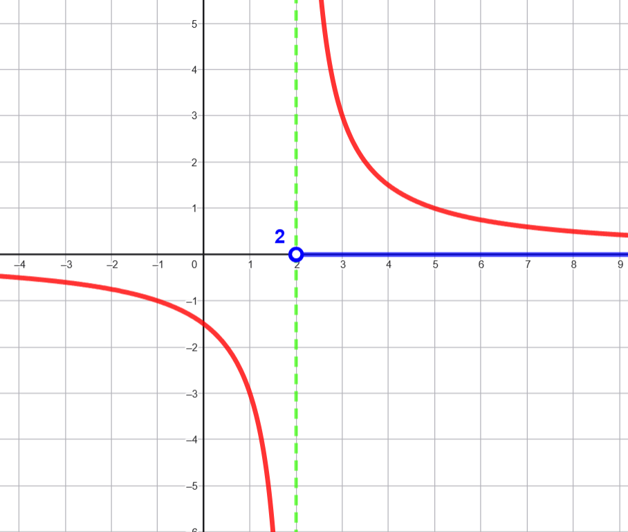
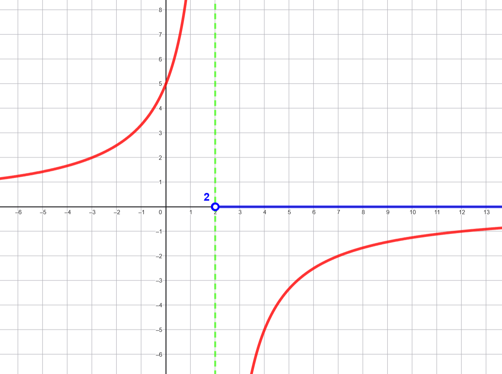
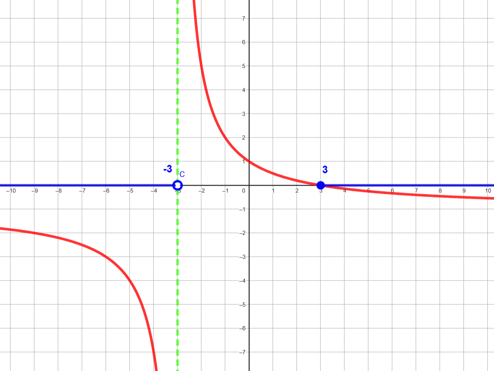
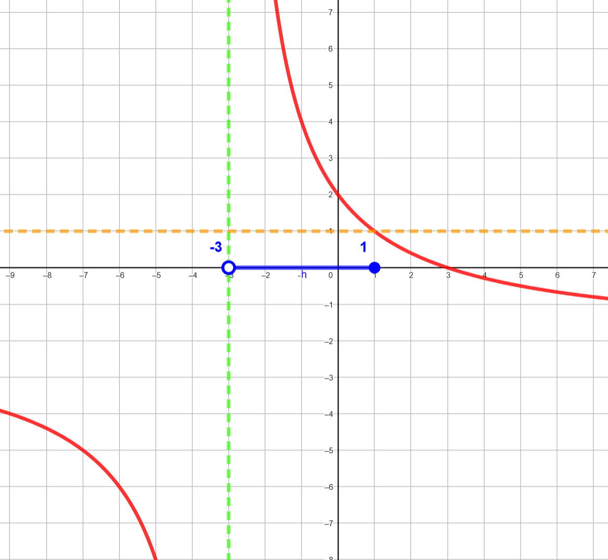
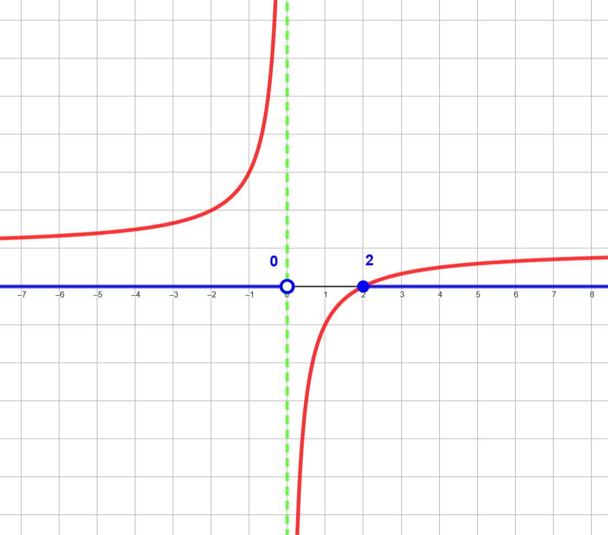
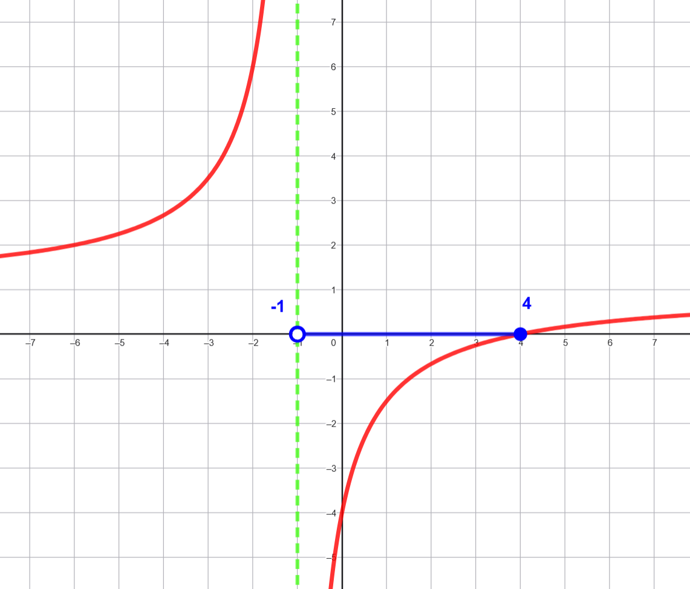

Resuelve las siguientes inecuaciones racionales:
Paso 1: Determinar los puntos críticos
-
El numerador \(3\) es positivo siempre.
-
El denominador \(x - 2 = 0 \Rightarrow x = 2\) es el único punto crítico.
Paso 2: Analizar el signo de la expresión
La expresión será positiva cuando el denominador sea positivo:
- \(x−2>0⇒x>2\)
Paso 3: Conjunto solución \[\boxed{x \in (2,+\infty)}\]

\( \dfrac{-10}{x-2}<0\)
Dominio: \(x≠2\)
Punto crítico: \(x=2\)
Análisis de signos:
Para \(x < 2: \quad x−2<0→ \dfrac{-10}{x-2}>0\)
Para \(x > 2: \quad x−2>0→ \dfrac{-10}{x-2}<0\)
✅ Solución: \[\boxed{x \in (2, +\infty) }\]

\(\dfrac{3-x}{x+3} \leq 0\)
-
Dominio: \(x≠−3\)
-
Puntos críticos:
\(3 - x = 0 → x=3\)
\(x + 3 = 0 → x=−3\)
Intervalos: \((-\infty, -3), (−3,3), (3,+\infty)\)
Análisis de signos:
\((-\infty, -3)\): Numerador positivo, denominador negativo → negativo
\((-3,3)\): Numerador positivo, denominador positivo → positivo
\((3,+\infty)\): Numerador negativo, denominador positivo → negativo
✅ Solución: \((-\infty, -3) \cup (3, +\infty) \quad 3\) no incluido, pero como es \(\text{"}\leq 0\text{"}\), incluimos el punto donde el numerador se anula:
Solución final: \[\boxed{x \in (-\infty, -3) \cup \left[3, +\infty \right)}\]

\(\dfrac{6-2x}{x+3} \geq 1 \)
Primero llevamos todo a un solo lado:
\( \dfrac{6 - 2x}{x + 3} - 1 \geq 0 \Rightarrow \dfrac{6 - 2x - (x + 3)}{x + 3} \geq 0 \Rightarrow \dfrac{3 - 3x}{x + 3} \geq 0 \)
Dominio: \(x \ne -3\)
Puntos críticos:
\(3 - 3x = 0 → x = 1\)
\(x + 3 = 0 → x = -3\)
Intervalos: \((-\infty, -3), (-3, 1), (1, +\infty)\)
Análisis de signos:
\((-\infty, -3)\): Numerador positivo, denominador negativo → negativo
\((-3, 1)\): Numerador positivo, denominador positivo → positivo
\((1, +\infty)\): Numerador negativo, denominador positivo → negativo
✅ Solución:\[\boxed{ x \in (-3, 1]}\]

\( \dfrac{x-2}{x} \geq 0\)
-
Dominio: \(x \ne 0\)
-
Puntos críticos:
\(x - 2 = 0 → x = 2\)
\(x = 0\) -
Intervalos: \((-\infty, 0), (0, 2), (2, +\infty) \)
-
Análisis de signos:
\((-\infty, 0) \): Numerador negativo, denominador negativo → positivo
\((0, 2) \): Numerador negativo, denominador positivo → negativo
\((2, +\infty) \): Numerador positivo, denominador positivo → positivo
✅ Solución: \[\boxed{ x \in (-\infty, 0) \cup [2, \infty)} \]

\(\dfrac{x}{x + 1} - \dfrac{4}{x + 1} < 0\)
Combinamos las fracciones:
\( \dfrac{x - 4}{x + 1} < 0 \)
- Dominio: \(x \ne -1\)
- Puntos críticos:
\(x - 4 = 0 → x = 4\)
\(x + 1 = 0 → x = -1\) - Intervalos: \((-\infty, -1)), (-1, 4), ((4, +\infty)\)
- Análisis de signos:
\((-\infty, -1)\): Numerador negativo, denominador negativo → positivo
\((-1, 4)\): Numerador negativo, denominador positivo → negativo
\((4, +\infty)\): Numerador positivo, denominador positivo → positivo
✅ Solución: \[\boxed{x \in (-1, 4)}\]
